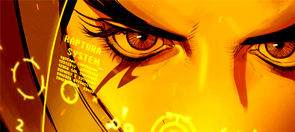

Ultimamente, fãs de Overwatch estão divididos entre continuar se dedicando ao jogo e encontrar outro FPS como entretenimento ou competitivo favorito. Há quem ache que o público está sendo exigente demais, porém devemos concordar que não é possível agradar a gregos e troianos ao mesmo tempo, não é mesmo?
Na minha opinião, a Blizzar tem melhorado um pouco e ganhou alguns créditos com jogadores de servidores sul-americanos quando, no final do mês de julho já era possível apreciar alguns streamers participando de partidas com média de SR na casa dos 4000. SIM! Partidas entre grão-mestres e top 500 começaram a rolar em nosso precioso, maltratado e esquecido servidor.
Outro ponto positivo, é justamente em relação aos servidores; de uns meses pra cá, parece que ele tem recebido um pouquinho mais de atenção, pois as temidas disconnections estão ocorrendo cada vez menos. Mais uma novidade é a volta da transmissão das playoffs no canal Overwatch Brasil no YouTube. Embora a quantidade de viewers seja pouca, em relação à transmissão original (em média 1k de espectadores aqui contra 30k no NA; chutando por alto, somente com base nos dados do YouTube), os fãs mais entusiasmados acompanharam de perto e, com certeza, sentiram falta das narrações e análises das partidas em PT-BR.
Nessa hora, você pensa: "Uhul, a Blizzard está finalmente valorizando seus fãs! O jogo não morreu! Agora, vai! Agora, todo mundo que saiu vai voltar! Tô até vendo o Sinatraa voltando!" Bom, infelizmente, NÃO! Senta aí, vou te falar alguns detalhes que você esqueceu de considerar.
É o seguinte, pequeno padawan, por mais que a Empresa faça mudanças, renove tudo, lance novos herois, novos mapas etc, o público sempre vai achar que é pouco! Por exemplo, na data, em que esse pequeno experimento que faço chamado artigo, está sendo lançado, o meta atual é: Roadhog, Zarya, Ashe, Torb, Ana e Mercy. Podendo ter variações com Wrecking Ball, Reaper, Pharah, Zenny ou Lúcio. Não necessariamente apenas essas, mas o importante é que não se joga mais com shields, principalmente por causa do Roadhog, que está na linha de frente, foi buffado e quebra escudos com muita facilidade. Enfim, não importa a condição do meta atual; é possível encontrar, em redes sociais, reclamações, dizendo que o Papa Jeff ficou louco, a Blizzard está com preguiça de investir no jogo etc etc etc ...
Todo meta é sempre a mesma coisa, seja com shield ou sem. Sem contar que todo evento, as pessoas reclamam "Ah, é a mesma coisa sempre! Skin nova e é só isso! Não traz nada de novo!" Realmente, nessa parte eu concordo, mas a verdade é que não estou nem ligando, o que me atrai no jogo é o competitivo, é a vontade de crescer e melhorar minhas skills! Todos os dias existem pessoas reclamando de Overwatch e eu já aceitei que vai ser sempre assim. Alguns metas são horríveis mesmo, mas é preciso ter um rodízio de vantagem para todos os herois, você não acha? Afinal, imagina só os Mercy, Symmetra e outros mains chorando o tempo inteiro que seu heroi nunca é valorizado ou buffado; nada mais justo, não é mesmo?
Dentre todos os assuntos, deixei o mais polêmico para o final. Existe um problema nesse jogo e precisamos conversar sobre ele. O problema é: players jogando em contas secundárias (até mesmo mais)!!